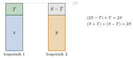
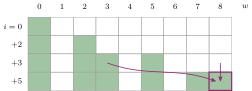
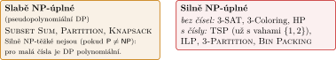
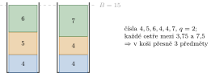

11.4 Číselné problémy¶
Doposud byla čísla v instancích jen „nálepky“ (indexy, prahy \(k\)). Nyní se samotná velikost čísel stane překážkou.
Problém 11.8: \(\prob{Subset Sum}\) (součet podmnožiny)
Vstup: kladná celá čísla \(a_1,\dots,a_n\) a cíl \(T\).
Otázka: existuje \(I\subseteq\{1,\dots,n\}\) taková, že \(\sum_{i\in I}a_i=T\)?
Problém 11.9: \(\prob{Partition}\) (dva loupežníci)
Vstup: kladná celá čísla \(a_1,\dots,a_n\).
Otázka: lze je rozdělit na dvě skupiny se stejným součtem?
Obojí je v \(\href{../ch-np/ch-np-tridy-nedeterministicke-casove-slozitosti.html#def-ntime}{\class{woo-pk-def-ntime}{\NP}}\): certifikátem je vybraná podmnožina, součet spočítáme.
11.4.1 \(\prob{1-in-3 SAT}\redp\prob{Subset Sum}\)¶
Redukce: \(\href{../ch-x3c/ch-x3c-1-in-3-sat.html#prob-1in3}{\class{woo-pk-prob-1in3}{\prob{1-in-3 SAT}}} \mathrel{\href{../ch-redukce/ch-redukce-jak-porovnat-slozitost-dvou-problemu.html#def-redukce}{\class{woo-pk-def-redukce}{\redp}}} \href{#prob-subsetsum}{\class{woo-pk-prob-subsetsum}{\prob{Subset Sum}}}\)
formule \(\Phi\) \(\;\longmapsto\;\) čísla \(v_i,\bar v_i\) a cíl \(T\)
Připomenutí (kapitola 10): v 1-in-3 SAT musí být v každé klauzuli přesně jeden literál pravdivý. To zní jako sčítání, kde cíl je 1!
Konstrukce. Čísla chápeme jako vektory číslic v soustavě o základu 4; jedna číslice pro každou proměnnou a jedna pro každou klauzuli (celkem \(n+m\) číslic).
- Pro každou proměnnou \(x_i\) dvě čísla: \(v_i\) (\(x_i=\mathrm{TRUE}\)) a \(\bar v_i\) (\(x_i=\mathrm{FALSE}\)). Obě mají 1 v číslici proměnné \(x_i\); \(v_i\) má navíc 1 v číslicích klauzulí obsahujících literál \(x_i\), \(\bar v_i\) v číslicích klauzulí s literálem \(\lnot x_i\).
- Cíl \(T\): samé jedničky, \(T=11\ldots1_4\).
Proč základ 4? V číslici proměnné sčítáme nejvýš 2 jedničky, v číslici klauzule nejvýš 3. Součet tedy nikdy nepřeteče do vyššího řádu – číslice se sčítají nezávisle.
Příklad 11.10: \(\Phi=(x_1\lor\lnot x_2\lor x_3)\land(\lnot x_1\lor x_2\lor x_3)\)
\(n=3\), \(m=2\), čísla mají \(n+m=5\) číslic v základu 4.
Řešení
| Číslo | \(x_1\) | \(x_2\) | \(x_3\) | \(C_1\) | \(C_2\) |
|---|---|---|---|---|---|
| \(v_1\) (\(x_1=T\)) | 1 | 0 | 0 | 1 | 0 |
| \(\bar v_1\) (\(x_1=F\)) | 1 | 0 | 0 | 0 | 1 |
| \(v_2\) (\(x_2=T\)) | 0 | 1 | 0 | 0 | 1 |
| \(\bar v_2\) (\(x_2=F\)) | 0 | 1 | 0 | 1 | 0 |
| \(v_3\) (\(x_3=T\)) | 0 | 0 | 1 | 1 | 1 |
| \(\bar v_3\) (\(x_3=F\)) | 0 | 0 | 1 | 0 | 0 |
| cíl \(T\) | 1 | 1 | 1 | 1 | 1 |
Např. \(x_1=T\), \(x_2=T\), \(x_3=F\): \(v_1+v_2+\bar v_3=11111_4=T\) \(\checkmark\) (v každé klauzuli právě jeden pravdivý literál: v \(C_1\) jen \(x_1\), v \(C_2\) jen \(x_2\)).
(Na slajdu se pruhy nad \(\bar v_i\) ztratily – v příkladu je správně \(v_1+v_2+\bar v_3\).)
Důkaz: Korektnost
Díky základu 4 je součet vybraných čísel roven \(T\) právě tehdy, když každá číslice dá součet 1.
(\(\Rightarrow\)) Z ohodnocení vybereme \(v_i\) pro \(x_i=T\) a \(\bar v_i\) pro \(x_i=F\). Číslice proměnných: z každé dvojice přesně jedno číslo \(\Rightarrow\) součet 1. Číslice klauzulí: jedničku přispějí přesně pravdivé literály, takový je v každé klauzuli právě jeden \(\Rightarrow\) součet 1.
(\(\Leftarrow\)) Číslice proměnné \(x_i\) má součet 1 \(\Rightarrow\) vybráno přesně jedno z \(v_i,\bar v_i\) \(\Rightarrow\) ohodnocení. Číslice klauzule \(C_j\) má součet 1 \(\Rightarrow\) v \(C_j\) je přesně jeden pravdivý literál.
Velikost. Máme \(2n\) čísel a cíl; každé má \(n+m\) číslic v základu 4. Hodnota čísla je až zhruba \(4^{n+m}\) – exponenciálně velká! Ale zápis zabere jen \(\log_2 4^{n+m}=2(n+m)\) bitů. Celá instance má \(O(n(n+m))\) bitů, redukce je polynomiální a \(\href{#prob-subsetsum}{\class{woo-pk-prob-subsetsum}{\prob{Subset Sum}}}\) je NP-úplný.
Pozor
Hodnoty čísel jsou exponenciální, ale jejich zápis je krátký. Tohle si zapamatujte – celý zbytek kapitoly se točí kolem rozdílu mezi hodnotou čísla a délkou jeho zápisu.
11.4.2 \(\prob{Subset Sum}\redp\prob{Partition}\)¶
Redukce: \(\href{#prob-subsetsum}{\class{woo-pk-prob-subsetsum}{\prob{Subset Sum}}} \mathrel{\href{../ch-redukce/ch-redukce-jak-porovnat-slozitost-dvou-problemu.html#def-redukce}{\class{woo-pk-def-redukce}{\redp}}} \href{#prob-partition}{\class{woo-pk-prob-partition}{\prob{Partition}}}\)
\((a_1,\dots,a_n;\ T)\) \(\;\longmapsto\;\) \((a_1,\dots,a_n,\ x,\ y)\)
Nechť \(S=\sum_i a_i\); bez újmy na obecnosti \(T\le S\) (jinak je odpověď triviálně NE a vydáme pevnou NE-instanci). Přidáme dvě „vyrovnávací“ čísla
Nový celkový součet je \(S+(2S-T)+(S+T)=4S\), každý loupežník tedy musí dostat přesně \(2S\).

Důkaz: Korektnost
(\(\Rightarrow\)) Má-li podmnožina \(I\) součet \(T\), dáme jednomu loupežníkovi \(x\) a čísla z \(I\) (\((2S-T)+T=2S\)), druhému \(y\) a zbytek (\((S+T)+(S-T)=2S\)).
(\(\Leftarrow\)) Mějme rozdělení na dvě poloviny se součtem \(2S\). Protože \(x+y=3S>2S\), jsou \(x\) a \(y\) u různých loupežníků. Loupežník s číslem \(x\) musí z původních čísel dosbírat přesně \(2S-x=T\) – to je hledaná podmnožina.
Čísla zůstávají zapsaná binárně a narostou jen o konstantní počet bitů, redukce je polynomiální.
11.4.3 \(\prob{Subset Sum}\redp\prob{Knapsack}\)¶
Problém 11.11: \(\prob{Knapsack}\) (problém batohu)
Vstup: předměty s váhami \(w_1,\dots,w_n\) a cenami \(c_1,\dots,c_n\), nosnost \(W\) a cílová cena \(C\).
Otázka: lze vybrat předměty s celkovou váhou \(\le W\) a celkovou cenou \(\ge C\)?
Redukce: \(\href{#prob-subsetsum}{\class{woo-pk-prob-subsetsum}{\prob{Subset Sum}}} \mathrel{\href{../ch-redukce/ch-redukce-jak-porovnat-slozitost-dvou-problemu.html#def-redukce}{\class{woo-pk-def-redukce}{\redp}}} \href{#prob-knapsack}{\class{woo-pk-prob-knapsack}{\prob{Knapsack}}}\)
\((a_1,\dots,a_n;\ T)\) \(\;\longmapsto\;\) \(w_i=c_i=a_i\), \(W=C=T\)
Každé číslo \(a_i\) se stane předmětem s váhou i cenou \(a_i\). Výběr s váhou \(\le T\) a cenou \(\ge T\) má součet přesně \(T\). Batoh lze naplnit \(\iff\) existuje podmnožina se součtem \(T\). \(\href{#prob-subsetsum}{\class{woo-pk-prob-subsetsum}{\prob{Subset Sum}}}\) je speciální případ \(\href{#prob-knapsack}{\class{woo-pk-prob-knapsack}{\prob{Knapsack}}}\)u – zobecnění těžkého problému je těžké.
11.4.4 Dynamické programování pro Subset Sum¶
Věta 11.12 (Pseudopolynomiální algoritmus)
\(\href{#prob-subsetsum}{\class{woo-pk-prob-subsetsum}{\prob{Subset Sum}}}\) lze rozhodnout v čase \(O(n\cdot T)\).
Důkaz
\(\mathrm{DP}[i,w]=\mathrm{TRUE}\iff\) z prvních \(i\) čísel lze poskládat přesně součet \(w\). Základ: \(\mathrm{DP}[0,0]=\mathrm{TRUE}\), ostatní \(\mathrm{DP}[0,w]=\mathrm{FALSE}\). Krok: číslo \(a_i\) buď nepoužijeme, nebo použijeme:
Tabulka má \((n+1)\times(T+1)\) políček, každé spočítáme v \(O(1)\).

Otázka za milion dolarů (doslova)
Čas \(O(n\cdot T)\) je přece polynom. Dokázali jsme právě \(\href{../ch-cas/ch-cas-tridy-p-a-exp.html#def-tridy}{\class{woo-pk-def-tridy}{\PP}}=\href{../ch-np/ch-np-tridy-nedeterministicke-casove-slozitosti.html#def-ntime}{\class{woo-pk-def-ntime}{\NP}}\)? Ne! Čas algoritmu měříme vždy vůči délce zápisu vstupu v bitech, ne vůči hodnotám čísel. \(T=2^{20}\) zapíšeme binárně na 21 bitů, unárně potřebujeme \(\approx10^6\) čárek. Zabírá-li \(T\) celkem \(k\) bitů, je \(T\) až \(2^k\) a čas \(O(n\cdot T)=O(n\cdot2^k)\) je vůči vstupu exponenciální. V naší redukci z 1-in-3 SAT mají čísla hodnotu až \(4^{n+m}\), ale zápis jen \(2(n+m)\) bitů – redukce je polynomiální a DP zde nepomůže.
Definice 11.13: Pseudopolynomiální algoritmus
Algoritmus je pseudopolynomiální, pokud je jeho čas polynomiální vůči délce vstupu a velikosti (hodnotě) čísel na vstupu – tedy polynomiální, kdyby byla čísla zapsaná unárně – ale může být exponenciální vůči délce binárního zápisu.
11.4.5 Slabá vs. silná NP-úplnost¶
Definice 11.14: Silně a slabě NP-těžký problém
Problém je silně NP-těžký, pokud zůstává NP-těžký, i když jsou všechna čísla na vstupu omezena polynomem ve velikosti vstupu (ekvivalentně: i při unárním zápisu čísel).
Problém je slabě NP-úplný, je-li NP-úplný, ale má pseudopolynomiální algoritmus.

Problém 11.15: \(\prob{3-Partition}\)
Vstup: \(3q\) kladných celých čísel se součtem \(qB\), každé ostře mezi \(B/4\) a \(B/2\).
Otázka: lze čísla rozdělit na \(q\) trojic, z nichž každá má součet přesně \(B\)?
Věta 11.16 (Garey, Johnson 1975)
\(\href{#prob-3partition}{\class{woo-pk-prob-3partition}{\prob{3-Partition}}}\) je silně NP-úplný – i s čísly zapsanými unárně. (Bez důkazu.)
Rozdíl proti \(\href{#prob-partition}{\class{woo-pk-prob-partition}{\prob{Partition}}}\): tam jsou jen 2 skupiny, tady jich je \(q\) a jejich počet roste se vstupem. \(\href{#prob-3partition}{\class{woo-pk-prob-3partition}{\prob{3-Partition}}}\) je typický zdroj redukcí na balení, rozvrhování a hlavolamy.
11.4.6 \(\prob{3-Partition}\redp\prob{Bin Packing}\)¶
Problém 11.17: \(\prob{Bin Packing}\) (rozhodovací verze)
Vstup: předměty velikostí \(s_1,\dots,s_n\), kapacita koše \(B\) a počet košů \(q\).
Otázka: lze všechny předměty rozdělit do \(q\) košů tak, aby žádný nepřetekl?
Redukce: \(\href{#prob-3partition}{\class{woo-pk-prob-3partition}{\prob{3-Partition}}} \mathrel{\href{../ch-redukce/ch-redukce-jak-porovnat-slozitost-dvou-problemu.html#def-redukce}{\class{woo-pk-def-redukce}{\redp}}} \href{#prob-binpacking}{\class{woo-pk-prob-binpacking}{\prob{Bin Packing}}}\)
\((a_1,\dots,a_{3q};\ B)\) \(\;\longmapsto\;\) předměty \(a_i\), kapacita \(B\), \(q\) košů
Čísla se stanou předměty, kapacita \(B\), \(q\) košů. Součet je \(qB\), takže každý koš je přesně plný; velikosti jsou ostře mezi \(B/4\) a \(B/2\), takže v každém koši jsou přesně 3 předměty (dva jsou málo, čtyři moc). Čísla se nezměnila – redukce zachová i unární zápis, \(\href{#prob-binpacking}{\class{woo-pk-prob-binpacking}{\prob{Bin Packing}}}\) je proto silně NP-těžký.

Past: číselné hodnoty a velikost redukce
Typická chyba: těžkost grafového problému \(X\) „dokážu“ redukcí ze \(\href{#prob-subsetsum}{\class{woo-pk-prob-subsetsum}{\prob{Subset Sum}}}\)u: pro každé číslo \(a_i\) vytvořím cestu o \(a_i\) vrcholech… Proč je to špatně? Číslo \(a_i\) zabírá na vstupu jen \(k=\log_2 a_i\) bitů, cesta má ale \(a_i\approx 2^k\) vrcholů – redukce vyrobí exponenciálně velký výstup a není polynomiální.
Kdy je redukce z číselného problému v pořádku?
- Čísla zůstanou zapsaná binárně (jako u \(\href{#prob-subsetsum}{\class{woo-pk-prob-subsetsum}{\prob{Subset Sum}}}\mathrel{\href{../ch-redukce/ch-redukce-jak-porovnat-slozitost-dvou-problemu.html#def-redukce}{\class{woo-pk-def-redukce}{\redp}}}\href{#prob-partition}{\class{woo-pk-prob-partition}{\prob{Partition}}}\)).
- Potřebuji-li čísla převést na strukturu (vrcholy, políčka), redukuji ze silně těžkého problému, např. z \(\href{#prob-3partition}{\class{woo-pk-prob-3partition}{\prob{3-Partition}}}\) – tam jsou čísla polynomiálně malá.
Zlaté pravidlo pro praxi
Až v praxi narazíte na NP-těžký problém s čísly, zeptejte se: „Je silně, nebo slabě těžký?“
- Slabě těžký a čísla nejsou obří \(\Rightarrow\) pseudopolynomiální DP vás pravděpodobně zachrání.
- Silně těžký \(\Rightarrow\) malá čísla nepomohou; sáhněte po ILP řešiči nebo jiném přístupu.